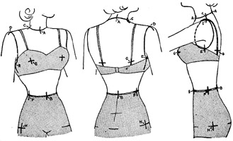

1942—Modern Pattern Design
by Harriet Pepin
Chapter 2—Slopers
Slopers in the Industry
While studying the foregoing problems you learned how the foundation pattern may be the means of cutting new designs. This "block system" of pattern designing is being generally used in the garment manufacturing industry. You have also learned that although additional drapery or "fullness" may be inserted, the basic measurements in the garment will not change and the new garment will remain the same "size." Now that you have discovered the advantages of this system, you are probably eager to learn how to take body measurements so that a sloper may be made for an individual.
The next step will be to study the way to take these measurements used to draft a sloper. These measurements are furnished for your convenience. When you have completed a standard, full size sloper draft, you will then measure up your own model form and from your own set of measurements, you will draft a model size sloper which must become the basis for producing the remaining pattern designs.
The foundation pattern, or sloper, is used by designers who work in manufacturing plants where standard size garments are created. It is now being used by the people who originate the designs for commercial patterns. And it may also be used by the custom designers who produce wardrobes for customers who do not have proportionate figures. It is an American made system and its development has come in recent years.
As mentioned before, it is important that you realize that, up to this time, there is no "perfect" set of measurements which represent any certain size ready-to-wear garment found in our retail stores and produced in our many garment manufacturing plants. At this time, each manufacturer's designer perfects what he believes to be the ideal size 16 sloper, for example, and all new designs are produced from that sloper. Whatever changes may be made from year to year are brought about because of complaints from store buyers who are selling his designs to the public. If he receives numerous complaints that all his designs require alterations in the waistline, for example, then he may make a new sloper for the new season which has a half inch change in the size of the waist.
But there is another important governing factor which the designer must recognize. The basic silhouette of the corseted feminine figure changes gradually from year to year. Corset designers watch the trends also and one year the ideal feminine figure may have a small waistline with rounded hips. The next year the fashionable silhouette may be the narrow hip line and lifted bust. Fashionable women buy good foundation garments and these garments aid in giving them the ideal silhouette to wear the clothes of that season. Hence, the designer of high quality apparel may change the shape of his basic slopers slightly from year to year to make sure that all of his finished garments will fit nicely over the newly designed foundation garments. Obviously, low price garment manufacturers do not observe these slight changes as do the manufacturers of high style clothing. Women who purchase inexpensive clothing are not as keenly fashion conscious and maintain a "normal" silhouette by wearing just average girdles.
As there is no standard set of measurements, you might buy a size 16 dress in one store and find that no alteration would be needed. But you might buy another same size dress in the same department and that would require several adjustments. The second garment had come from a manufacturing plant where a different set of slopers were used. As all retail stores purchase their stock from many manufacturers, this varies the stock enough to please more women.
You are now ready to learn to draft a sloper. Study the following diagrams and instructions carefully.
How to Take Measurements Correctly
Before attempting to measure a figure, take time to check your tapeline against your ruler for accuracy. Due to possible imperfections, you may find a minute difference. As the square is used in making the drafts and the tapeline used in getting the measurements, if there is a difference, you can make allowances accordingly.
Black dots on diagrams represent points at which measurements are to be taken. Note that vertical bodice measurements are taken to the bottom of the waistline tape. When taking vertical hip measurements, start with the bottom of the tape and measure downward.
Measurement Points
Note that all points except A, G and B are common to both back and front of figure. Point G aids in determining length of basic control dart in back and front.
Where Measurements are Taken
On the following pages is a detailed description of each measurement. In preparation for the time when you will make a draft from measurements which you will take yourself, go through the procedure, using your tapeline. This will help you to visualize each measurement as it is used in drafting the sloper. Tailors soon learn the convenience of memorizing measurements and the order of taking them. You should do the same. As you rehearse this procedure, repeat the name of each measurement you are taking. You will have memorized them, in order, with this repeated practice.
Measurements should be taken with the tapeline smooth, but not stretched. Every individual has a slightly different "touch" with the tapeline. Several people could take measurements of a single person or dress form and the results would vary one eighth of an inch at certain spots. Before starting to make a draft from your own measurements of the figure, check your results a second time to make certain you are right.
Take all vertical measurements on the same half of the figure, both back and front. Then, if the dress form or individual being measured is not identical on each side, the variation will be immediately noted when fitting the completed muslin.
1. Center Bodice Length: Taken from Center Base of Neck to Center Waist Point. Fig 1. (Take this measurement slightly loose, dependent upon depth of the division between the breasts.)
2. Full Bodice Length: Taken from Shoulder Neck Point to Waistline. Fig. 1. (This measurement should fall over the point of the bust.)
3. Across Measurement: Taken across the dress form at a point 4 inches below Center Base of Neck. (This measurement is sometimes referred to as the "chest" and "shoulder" measurement. It aids in shaping the armscye of the draft.) Fig. 2.
4. Shoulder Point Width: Taken from Shoulder Tip Point to Shoulder Tip Point, with the tapeline falling upon the Center Base of the Neck. Fig. 2. (This measurement also aids in shaping the armscye of the draft.)
5. Full Bodice Width: Taken across the dress form, from side to side, at a position on a level with the point of the bust. Fig. 2. (On individuals this position may vary somewhat. If customer has very low, heavy bustline, allow an extra half inch to measurement.)
6. Shoulder Pitch: Taken from Shoulder Tip Point, down across the point of the bust to Center Waist Point. Fig. 3. (Although a person may have broad shoulders, they may still be sloped. This measurement records the posture of the figure.)
7. Shoulder Width: Taken from Shoulder Tip Point to Shoulder Neck Point. Fig. 3. (Individuals may have broad shoulders but a small neck. This measurement aids in determining the size of the neckline in the draft.)
8. Neck Measurement: Shoulder Neck Point to Shoulder Neck Point on opposite side. Fig. 3. (Sizes and shapes of necklines are dependent upon the manner with which the head and shoulders are carried.)
 9. Shoulder Height: Start at Shoulder Tip, follow armscye line down 4 inches
and then drop down to Side Waist Point. Fig. 3. (Observe that this measurement
does not fall over the bust. It aids in determining the size of dart which
will be needed to control bust.)
9. Shoulder Height: Start at Shoulder Tip, follow armscye line down 4 inches
and then drop down to Side Waist Point. Fig. 3. (Observe that this measurement
does not fall over the bust. It aids in determining the size of dart which
will be needed to control bust.)
10. Side Bodice Length: From armscye down to Side Waist Point. Fig. 4. (When measuring individual figures, the armscye is located about 1/2 inch below actual armpit. On heavier figures, it may be located an inch below, dependent upon how customer likes close fit of garments.)
11. Waist Measurement: Side Waist Point to Side Waist Point on opposite side. Fig. 4. (This measurement varies in proportion to the similar measurement of the back half of the body, dependent upon posture of figure.)
12. Bust Point Height: Taken from Bust Point to Waistline. Fig. 4. (Individual figures vary greatly in bust height. By determining the position of the bust in this measurement, you can plan length of dart.)
13. Bust Point Width: Taken from Bust Point to Bust Point. Fig. 4. (Likewise, the width between breasts and also the shoulder blades varies in women. This measurement also aids in placing the point of dart in correct position in draft.)
14. Hip Measurement: From Side Hip Point to Side Hip Point on opposite side. Fig. 4. (Side Hip Point is located 7 inches down from the waistline in all sizes of most factory made garments. However, when measuring an individual, it should be located in a position which is in line with the largest curve of the buttocks. This may vary from 6 to 10 inches from the waistline.)
Observe, in the above diagrams, that relative measurements are taken of the back of the figure. As measurements number 7 and number 10 are common to both back and front, they may be noted in the back measurement chart at the same time they are recorded for the front.
Measurement number 5, which measures the bodice width in front should fall in a horizontal line, directly across the highest point of the bust. The position of this measurement, therefore, will be dependent upon the height of the bust. However, when taking that same measurement of the back half of the body, it should be taken from armpit to armpit, as that area is the widest portion of the back.
Chart of Garment Measurements
In the following chart are listed the back and front bodice measurements for the size 16 and 14 model forms. Space has also been provided where you may insert the measurements which you will take from your model form in a problem a little further on.
Do not forget that these measurements, although the most modern available, may not conform in every respect, to other similar sets of measurements you may some day use. Nor do they represent the measurements of a person who may wear a size 14 or 16 garment. Few people can wear garments which fit as closely as your muslins do on your model form. Therefore, we should expect that the person who finds a size 14 dress a comfortable fit may actually be slightly smaller in all of the horizontal measurements in this chart.
Bodice Measurements |
Front |
Back |
|||
| Size 16 | Size 14 | Size 16 | Size 14 | ||
| 1 | Center bodice length | 15 | 14 1/4 | 16 | 15 1/2 |
| 2 | Full bodice length | 18 | 17 1/2 | 16 3/4 | 16 1/4 |
| 3 | Across measurement | 12 | 11 1/2 | 13 1/4 | 12 3/4 |
| 4 | Shoulder point width | 14 3/4 | 14 1/2 | 14 1/4 | 13 3/4 |
| 5 | Full bodice width | 20 1/4 | 19 1/2 | 18 1/4 | 17 1/2 |
| 6 | Shoulder pitch | 18 | 17 1/2 | 16 | 15 1/2 |
| 7 | Shoulder width | 4 5/8 | 4 1/2 | 4 5/8 | 4 1/2 |
| 8 | Neck measurement | 9 1/4 | 9 | 6 1/4 | 6 |
| 9 | Shoulder height | 16 | 15 1/2 | 15 1/2 | 15 |
| 10 | Side bodice length | 7 1/2 | 7 1/4 | 7 1/2 | 7 1/4 |
| 11 | Waist measurement | 14 1/4 | 13 1/2 | 13 1/4 | 12 1/2 |
| 12 | Bust point height | 6 3/4 | 6 1/2 | 6 3/4 | 6 1/2 |
| 13 | Bust point width | 7 5/8 | 7 1/4 | 6 1/8 | 5 3/4 |
| 14 | Hip measurement | 17 3/4 | 17 | 17 1/4 | 16 1/2 |
| Sleeve Measurements | Size 16 | Size 14 | |||
| 1 | Overarm length | 23 3/4 | 23 | ||
| 2 | Underarm length | 17 | 16 1/2 | ||
| 3 | Biceps measurement | 13 | 12 1/2 | ||
| 4 | Wrist measurement | 6 3/4 | 6 1/2 | ||
A Few Instructions Always Apply
Before attempting to make your draft, have all your tools in readiness. You will need your French curve, your square and a well-sharpened lead pencil.
Your Curve will aid in describing the curves of the neckline and armscye.
Your Square will be used to establish right angles and at the same time aid in measuring distances and drawing straight lines. Examine your square carefully. Notice that the inches are divided into halves, quarters and eighths on one side. Turn it over and on the long arm you will see the areas marked thirds, sixths etc. The areas that are marked thirds and sixths are the same—the larger numbered areas being each one third of an inch and the smaller areas, marked by shorter lines, being one-sixth of an inch. The still smaller areas, marked by still shorter lines are each one-twelfth inch. Study the similar markings which appear on the short arm of the square.
Although most measurements taken involve the use of halves, quarters, or eighths of an inch, there are occasions, when some measurement is being divided or added to, that thirds or fifths may be required. If such a measurement might total four and two-thirds inches, the four inches would be measured off and then, by counting off two of the sections marked as thirds, the measurement would be recorded. Without these divisional points given to you on the square, it would be necessary to estimate that fractional amount and would lead to inaccuracies.
Your Pencil should be sharpened to a long point. All lines must be drawn against the square with the pencil point held closely under the edge of the square and the eraser end tilted away from the square. Should the pencil be held vertically, the pencil line could stand away from the square fully a sixteenth of an inch.
Precision in using your instruments will result in precise work. There should be little excuse for carelessness on this point.
Drafting a Front Bodice Sloper
In the old days, tailors and dressmakers drafted patterns for all tailored clothes for each individual. Designs which involved the use of drapery were attached to a closely fitted lining which had been drafted to measurements. Then the pattern for the draped portion was created by working directly over this lining, attaching the drapery here and there.
You have learned that, through the use of the modern free-hand slashing method, the basic sloper block can be the basis for countless designs. This modern block system is a combination of the two old-fashioned methods. The only occasion for the use of technical drafting nowadays is to produce the sloper. Tailors still employ drafting methods for men's clothing because such clothing is architectural in character. However, time may be when much of men's softer apparel may also be produced through the use of foundation slopers.
You can follow the procedure on the following pages to produce a front bodice draft. Turn to the measurement chart and use the measurements for a size 16. Before starting to work, check over each step carefully, mentally tracing each line shown in the diagram. You will notice that the measurements are used in the order that they were taken on the figure. When your draft is completed, it should closely resemble the diagram. When you have completed it, re-check each measurement for errors.
NOTE: When the tailor measures one for a suit he calls out the measurements in a certain sequence while his assistant jots them down. He has memorized this sequence, and also, most likely, the steps in drafting the patterns. He often chalks his draft directly on the fabric used for the suit. Naturally, this speeds his work; through ordered repetition he has become proficient and accurate; with careful study you may do the same.
A—Point A is located 4 inches below the top edge of your paper and 1 inch inward from the right margin. Place a dot and label point A.
A-B—Line A-B is equal in length to the amount of the Center Bodice Length given in measurement chart. Starting with point A, measure downward that distance, keeping square parallel to right edge of the paper. Place dot and label point B. Connect A and B.
B-2—This line equals Full Bodice Length measurement on the chart. Lay square along line A-B with short arm downward pointing to the left and the long arm extending upward, falling upon points B and A. From point B, measure off a distance equal to the Full Bodice Length and mark dot. Label dot 2. Draw the extending line A-2.
Draw a guide line 15 inches long upon which points 3, 4 and 5 will be located. As this line must be at a right angle (squared) from the vertical line B-2, lay the square so that the short arm extends downward along the line B-2 and the long arm extends across the paper towards the left.
2-3—From point 2, measure off a distance equal to one-half your Across Measurement. Label that point 3.
2-4—From point 2, measure off a distance equal to one-half the Shoulder Point Width and label that point 4.
2-5—From point 2, measure off a distance equal to one-half the Full Bodice Width (bust measurement) and label that point 5.
Square guide lines downward from points 5, 4 and 3 as shown in diagram.
B-6—From point B, measure a diagonal line equal to Shoulder Pitch Measurement to a point somewhere on guide line extending downward from point 4. Label point 6.
6-7—From point 6, measure off a line equal to the Shoulder Width Measurement to a point somewhere on line 2-3. (The corner at point 6 is not squared. The angle at this point will vary with measurements being used to produce any draft.) Label point 7.
A-8—With the short arm of the square along line A-B, square a guide line 6 inches long from point A. Do not label point 8 yet.
7-8—From point 7, square a line downward from the line 6-7. This line should be extended to intersect with the horizontal guide line from A. Mark intersection point of these two guide lines 8
6-C—From point 6, measure off a line 4 inches long to locate point 6 to fall somewhere on guide line 3. (This proportion is standard on all full size patterns.) Label point C.
C-9—From point C, measure off a line to fall somewhere on guide line 5 equal to the Shoulder Height Measurement less the 4 inch amount just used in locating point C. Mark point 9.
9-10—Starting from point 9, measure upward along line 5 a distance equal to the Side Bodice Length measurement given in the chart. Mark that point 10.
10-D—With the long arm of the square extending downward from point 10 and the short arm extending inward on your paper, square a line from line 10-9 which will intersect with guide line 4. Mark intersection point D. This aids in making armscye.
B-E—From point B, measure upward along line B-A a distance equal to Bust Point Height. Label this point E.
E-F—From point E, square a line from line B-E equal to one-half the Bust Point Width in your chart. Label point F and connect E and F.
B-G—From point B, square a line from line E-B equal in length to line E-F less one-half inch. Label point G. Connect points G and B. Connect points G and F. (The line G-F represents the position of the basic waistline dart extending to the bust point. If lines G-B and E-F were identical, the dart would be truly vertical. This would make waistline appear large. When making individual drafts, the suitable angle for the dart should be noted. When measuring a model form, the proportion could be determined with the tapeline.)
B-G-9—Draw a guide line connecting points G and 9. (Line B-G-9 represents a loose, unfitted waistline with the amount of dart yet undetermined. The dart must now be established to reduce the line B-G-9 down to actual front waist measurement.)
Measure the line B-G-9. Jot that measurement down. Take one-half the Waist Measurement given in the chart and subtract it from the measurement of B-G-9. The difference gives you the amount to be put into dart.
G-H—From point G, measure off a distance on the line G-9 equal to that difference. Label point H.
F-H—Connect points F and H.
Check lines F-G and F-H, making line F-H equal in length to F-G. Make correction as shown by dotted line in diagram. (This correction varies with various sizes.)
Use your curve as illustrated as an aid in shaping the armscye and neckline.
With your blue pencil, trace around your final draft as follows:
B-A-7-6-C-10-9-H-F-G-B
Set this draft aside and proceed to complete the draft for the back section of the bodice from instructions appearing on the following pages.
Drafting a Back Bodice Sloper
Study this diagram of the back bodice draft with that of the front bodice and note the similarity and variations between the two. Study your model form. Note that the shoulder curve is more shallow than the bust and it spreads over a larger area. Hence the small dart at the shoulder neck point provides control for that curve. The long narrow dart is needed to provide fitting for the inward curve of the body from the shoulder blades to the back waistline. Also note that the underarm line H-10 in the draft provides for some shaping at that position.
Also notice that the neckline is more shallow in the back than in the front draft. Study your model form and you will see that the neck tilts forward slightly which accounts for this difference.
Notice that the distance between points 3 and 4 in the front is greater than in the back. If anything, the ideal figure has a slight hollow below the base of the neck and there is a very slight curve across the shoulder blades in the back. Note the difference in the Across Measurements given for the front and back in the chart.
Observe that this draft is made in a reverse position to that made for the front. This assures using the measurements for the same half of the figure. Use size 16 measurements given in the chart.
A—Point A is located 4 inches downward from the top of the pattern paper and 1 inch inward from the left margin. Place dot at this point and label it A.
A-B—Draw a line downward, parallel to the left margin of your paper, equal to Center Bodice Length Measurement on your chart. Label lower point B.
B-2—This line equals the Full Bodice Length Measurement. Lay the square along line A-B. From point B, measure a line which extends through point A equal to the Full Bodice Length Measurement. Label point 2.
2-3—Square a guide line 15 inches long at point 2, from line B-2. From point 2, measure off a distance on this guide line equal to one-half the Across Measurement. Label this point 3.
2-4—From point 2, measure off a distance on this guide line equal to one-half the Shoulder Point Width Measurement. Label this point 4.
2-5—From point 2, measure off a distance on this guide line equal to one-half the Full Bodice Width Measurement. Label this point 5.
Square guide lines extending downward from points 3, 4 and 5.
B-6—Starting at point B, measure a diagonal line which will fall somewhere on guide line 4 which is equal to the Shoulder Pitch Measurement. Label this point 6.
6-7—From point 6, measure a line equal to the Shoulder Width Measurement to a point located somewhere on the line 2-3. Label this point 7.
A-8—From point A, measure a line equal to one-half the Back Neck Measurement, less 1/8 inch to a point somewhere on the line 2-3. Mark this point 8. The remaining distance between points 8 and 7 represents the amount to be used for the control dart for the curve of the shoulders. Because a curved line will be made to substitute for the guide neckline 8-A, the 1/8 inch is deducted to make allowance for that fact.
6-C—From point 6, measure downward 4 inches to a point somewhere on guide line 3. Label this point C. Connect points 6 and C with a straight guide line.
C-9—From point C, measure off a line equal to the Shoulder Height Measurement, less the 4 inches just used to locate point C, to a point somewhere on line 5. Label 9.
9-10—From point 9, measure upward along the guide line 5 a distance equal to the Side Bodice Length. Label this point 10.
10-D—From point 10, square a line which will intersect with guide line 4. Mark the intersection point D.
B-E—From point B, measure upward on line B-A a distance equal to Shoulder Blade Height. (This is measurement number 12 which corresponds to bust height taken for front.) Mark point E.
E-F—Square a line from point E equal to one-half the Shoulder Blade Width. (This is measurement number 13 which corresponds to bust point width in front.) Label point F.
B-G—B-G is equal in length to E-F less one-half inch and is squared from line B-A at point B. Label point G. (This determines angle of back waistline dart. When an individual is being measured, this should be determined with the tapeline. The one-half inch is satisfactory for standard sizes.)
G-9—From point G, draw a line to connect points G and 9. (Line B-G-9 represents the unfitted waistline. Some of this excess will be used in the dart, the remainder will be taken off at the side seam.)
Measure line B-G-9. Jot that amount down. Subtract one-half the Back Waist Measurement from this amount. The difference represents the amount which must be thrown into a dart and taken off the side seam.
Divide this difference in half. (Should minute fractions be involved, you can take a strip of paper equal to the difference and fold it in half as a measuring agent.)
9-H—From point 9, measure off a distance on the line B-G-9 equal to one-half the strip of paper. Label that point H.
H-10—Draw a connecting line between points H and 10.
G-I—From point G, measure to the right a distance equal to the remaining unused portion of the difference. Label point I.
F-G—Connect points F and G.
F-I—Connect points F and I.
Check the length of lines F-G and F-I to be sure they are of equal length. Make the required correction as shown by dotted line.
Because the side bodice length measurement was used to establish point 10 and the new side seam H-10 was later established, it is important to check the line H-10 to make sure it equals the original side bodice length measurement. Such correction should be made at point H. (As the side seam will meet the side seam of the bodice front, it must be identical in length.)
J—Locate this point 3 1/2 inches downward from point 8 in a position which is parallel to the center back line A-B. Label point J.
J-8—Connect points J and 8.
J-7—Connect points J and 7.
With the aid of the curve as shown in accompanying diagram, complete the back neckline and the armscye of the draft. Curve may have to be adjusted to complete armscye. It is merely a guide.
With blue pencil, trace around your finished draft as follows:
Check your draft carefully and check it against the bodice front draft at the shoulder seams and side seams. It should resemble the diagram in general proportions.
With this practice in the use of measurements, you are ready to measure your model form, record the measurements in the space provided in the chart and then use them to produce the draft and the muslin proof.
When drafts for the front and back bodices are finished, check them carefully. Allow seams at shoulder seam, underarm, waistline and the center back.
If the muslin doesn't show a good fit, it will be either an error in taking the measurements or in the use of them.
When a satisfactory muslin has been produced, cut away seam allowances on the draft and make front and back cardboard slopers. They will supplement those which you have been using.
It is quite possible for two individuals to measure up the same model, produce drafts for well fitting muslins and still not produce drafts which are identical. These are "human" variations but they should not exceed one sixteenth of an inch. Anything more than that would show up in the fit of the muslins.
Individual Measurements
Because many readers may wish to put this portion of their training into immediate use, these instructions are being given at this time.
There are three methods which might be used for making individual slopers, namely:
1. Altering a muslin made from a standard size draft to fit the individual and then making a card board sloper from this corrected muslin.
2. Taking measurements of the individual and making a draft from these measurements and testing results with a muslin proof.
3. Using muslin and draping a basic block directly upon the individual.
There are disadvantages as well as advantages to each method. Professional designers report a variation of opinions and generally agree that, with practice and care, the second method is preferred.
METHOD 1: is quicker when the customer doesn't vary much from standard dimensions. By using the perfectly proportioned pattern, some defects are lessened in importance and are better left unaltered.
METHOD 2: is the most direct and scientific approach to the problem. It includes the faults in posture as well as measurements. Care must be taken, though, in placing the points of measurements to give the best line to the construction seams. When using this method in business, many students draft directly upon muslin, with blue pencil.
METHOD 3: is offered as a possible substitute for method 2. Designers agree that it requires a good "eye" for line and a good "hand" for handling cloth and that errors can easily be made. It offers a good opportunity, however, for distribution of the basic control according to the curves of the figure. People who have done draping may find it a convenient method.
Because this text is primarily devoted to making drafts from measurements, such instructions will be applied to the making of personal slopers. The other two methods involve the training in alterations and draping. Method 1 involves alterations described on page 69. Method 3 is diagramed on page 4.
Students are demonstrating how successfully personal drafts may be made from individual measurements by taking great care in the placement of measurement points. As the human figure is not rigid, like the dress form, curves are intensely defined and not modified. Allowances for this fact should be made when taking measurements.
Make sure that the customer stands with weight distributed evenly on both feet. When being measured or fitted, many people have a tendency to straighten up more than usual, or lift the shoulders into a tense position. Watch to see that she maintains a relaxed, normal posture through her shoulders.
Use colored chalk for marking the points. It will rub off easily. Tie a tape around the waist to place the waistline, which will vary with different postures.
Keep this in mind: Take measurements number 1 in front and back loosely. This will make allowance for the indentation between breasts and shoulder blades.
Check these points of measurement with diagrams:
A—Should be placed in the hollow at the base of the neck in front and just above the bone in the back of the neck.
B—Should fall in a direct vertical line with A.
C—Should be placed slightly less than halfway on the normal neck silhouette. Observe the position on your model form.
D—This point should be placed at the point where the wrinkle appears when the customer raises her arm.
E—Should be placed about 1 inch below the armpit and slightly forward.
F—Should fall directly in line with point E except in heavy figures. Charts on next page will explain this point.
G—Points the actual bust point.
H—Divides the silhouette of the figure in half at the largest point of the hip.
If you will connect these points with lines drawn into your figures, you will observe the position of the seams which would result from the proper placing of these points.
PRACTICE PROBLEMS
It is suggested that you try and find some willing subjects for practice in taking individual measurements and making personal drafts. If you do not find that convenient, you can pad up your model form to have a heavier bust, set lower on the figure and take measurements off that. Leave the pads in place so that you may judge your results.
Before attempting to work out these practice problems, it would be advisable for you to study the comparison figure charts on the following page.
Observe shifting of points C, F and H with change of posture and flesh contours.
Notice that side seam lines E-F-H should change to conform to changing contours caused by flesh deposits on the heavier, mature figure. If side seam on Mrs. Heavy were to be made vertical as it was for Mrs. Slim, it would fail to divide her silhouette vertically and would reveal her bad figure lines.
The following diagrams reveal the changes which take place for the four type figures illustrated on the previous page. Note changes in size and length of bust darts with the increasing size of waistline. Note shape of the armscye in larger sizes to accommodate fullness under the arm. In the back sloper, the shoulder dart widens to accommodate greater curve in the shoulder area. The shoulders slope more in the mature figures also and the waistline dart shortens.
The muslin fitting of the individual draft is necessary for the same reason that it is when measuring a dress form. It reveals inaccuracies in taking measurements and permits minor corrections which may develop because of posture. It also gives the designer an opportunity to correct the position of basic construction seams, or darts, to overcome faulty appearance due to bad proportions of the individual.
If the muslin does not fit in several places, then you should retake the measurements and make a new attempt. If there is some single point which is unsatisfactory, an adjustment may be made to make the muslin fit and then the paper pattern may be corrected in an identical manner, thereby saving the necessity of repeating the procedure on the same subject.
Your work will improve with each new person you measure. It is a matter of practice and discovery of errors. Following are given a few defects which have appeared in classroom projects, each one of which requires but a simple adjustment to make the muslin a correct fit. On the left side of the drawing the error is shown and the right side of the drawing shows the method used to remedy the fault.
FIG. 1—Neckline does not set down around base of neck. Release shoulder seams near armscye. Number 6 measurement taken too short.
FIG. 2—Wrinkles across base of neck. Cut down neckline until it fits smoothly. Caused by number 1 measurement taken too long.
FIG. 3—Droopiness under the arm. Pinch in tiny dart in front section, extending to bust point. Leave corrective dart pinned in when muslin is returned to table. Slash up the basic waistline dart to shift this added control into basic dart. Lower side waistline an amount equal to that pinched out in corrective dart. Number 9 measurement was taken too long.
FIG. 4—Wrinkles at front of arm. Cut out armscye slightly. Shapes of armscyes must vary with muscular development around armpits of individuals.
FIG. 5—Excessive gaping at lower armscye. Pinch tiny diagonal dart to point of bust. Leave corrective dart pinned in as explained for Fig. 3. Do not overfit here! It is quite possible to pinch out too much at this point which will result in an ugly depression in garment when sleeve has been set in. Observe that a model form is so designed as to fill in the natural depression here. For that reason, the muslin on the model form may be fitted closely at this point.
FIG. 6—Excessive binding at front armscye. Activity in certain sports will develop extra muscle at this point. Make slash from armscye to bust point at the point where muslin binds. Permit the muslin to spread to relieve condition. Insert a small patch of muslin behind the slash and pin into position. This enlarges armscye exactly where needed. When muslin is flattened upon the table this adjustment will prove to reduce the amount of waistline control slightly as a result.
NOTE: This is a common adjustment when making boxy-type coats or heavily padded shoulders. It eliminates the "break" which may result from excessively close fitting at the front of the armscye in such silhouettes. When such an adjustment has been made, the sleeve cap may be broadened slightly at a relative position.
FIGS. 7 and 8—Muslin seems to be too long throughout. Do not follow the impulse to pull it down and cut it off at the waistline! Place the bustline of the muslin in the correct position on the figure and then take a small tuck straight across the chest area, if it seems to bulge with extra length there. Or a tuck taken in the area below the bust may make the proper adjustment.
If the customer stands too rigid and erect when measurements are taken, and then slumps into her true posture during the test fitting, the garment frequently needs such an adjustment across the chest. If the garment is too short in one of these areas, lengthen the pattern by slashing straight across it and setting in a piece of muslin wide enough to make the alteration. These alterations are common to both front and back.
FIG. 9—Armscye gaps in shoulder area. Pinch corrective dart in and then shift it into the basic shoulder dart when muslin is on the table. This will make a larger size shoulder dart.
FIG. 10—Armscye gaps near point of waist dart. Pinch in diagonal dart to point of waistline dart and shift this corrective dart into waistline dart later. Do not overfit here! It will tend to emphasize too rounded shoulders.
FIG. 11—Droopiness under the arm. Pinch in corrective dart in the back portion only and shift corrective dart into the basic waistline dart as in Fig. 3. This is an important fitting area. Smart, clean lines under the arm give the wearer a "trim" fit.
Your experience in the fitting of muslins to your model form should have given you an appreciation of a good fit. Muslin proofs for personal blocks should fit smoothly, but not skin tight. Some designers take the number 5 measurement on their customer with a tight tapeline and then add 1 inch for ease.
If you will mentally divide your bodice down the center front and horizontally through the bust, you can analyze the true seat of the trouble, if there is any. Any faults which appear above the bust line should be remedied without disturbing the area below the bust line.
Adding Ease in Front Bodice
When a muslin is fitted over a standard size model form, it is fitted closely. This is because it is assumed that the individual who purchases the garment will buy the size which provides sufficient room to provide an "easy" fit. When using a basic sloper which has been closely fitted to an individual, some designers find it convenient to have a supplementary bodice sloper which has an extra amount of room in the front. This is used when making blouses or other garments which require a softer fit around the bust. The accompanying diagram shows how this case may be added. The dotted lines must be made to equal the original dart length in the sloper. Note the slight corrections required at the shoulder and waistline. Such a pattern would be reserved for special use when making certain garments. It should be labeled to show the amount of added ease provided.
THE BACK SLOPER
Analysis for Need of Control
In the foregoing problems you studied the need for a control to be provided in the front bodice pattern. By drafting the back sloper you have seen the need for providing similar control for the curves which appear in that portion of the body.
The dart placed at the shoulder neck point in this pattern may be moved to the shoulder seam or the back neckline. The first and second positions are preferred for garments designed for younger women. The third is best suited to the mature woman's garments because, as women grow older, the highest point of the shoulder curve becomes more pronounced in the center back.
Notice that the fabric grain is placed on a true horizontal in the shoulder curve area. This insures strength where the strain on the garment is the greatest. If a garment is properly cut, the back may be very closely fitted without restraining movement of the arms. Garments designed for active sports wear are usually provided with extra means of expansion, such as pleats or fullness. After the golf swing, the garment falls back into position and a trim appearance is maintained.
From this point on, you will notice that the problems merely show a repeated use of some principle which you have previously studied. There are only a few basic principles common to pattern making. The student soon learns to use these same principles in many different ways.
Shifting Control from Shoulder Neck Point
1—To Center of Shoulder
Trace around original back bodice sloper on light weight paper to start this new pattern. Dotted lines show method for shifting the original control into the new position.
Before making any corrections in shoulder seam, establish position of left side of new dart parallel to center back. Make the width of new dart same as B-C. Make left edge of dart same length as right edge. Then connect it with point B. Area below point C is discarded in new pattern and original dart tracing is ignored. As new shoulder control dart is opening on an angle seam, it should be completed as diagramed in first bodice front problem.
Seams should be added to the pattern and a muslin test made. When new dart has been pinned into position, shoulder seam width should be identical with C-D in the sloper. After testing and approving results on a model form, seam allowance can be cut away from pattern and a cardboard sloper made in usual manner.
Remember that a dart produces a line in a garment. Therefore, to produce harmony in the back bodice, the position of the shoulder dart should continue the line of the waistline darts
If occasion demands, any such single dart may be substituted by using gathers, multiple darts, etc. Method would be identical with that diagramed for bodice front darts.
2—To Two Darts at Back of Neck
In some cases, a bodice is being designed in such a manner as to prevent the placing of the dart at the shoulder seam or shoulder neck. In such instances it must be shifted over to the center back neckline. This is particularly true when the shoulder seam has been moved as in the case of shirt waist blouses, diagramed later in this text.
The angle of the dart may vary as desired. If it is kept parallel to the center back, it will give the wearer a more erect appearance. If the points of the darts are spread apart too far, it may give the wearer the appearance of being round-shouldered. If the woman has a broad, thick neck, spreading the points slightly will make her neck appear more slender.
When the dotted line from A to C has been drawn, the final position of the dart is determined with relation to the center back. The new neckline dart should equal the distance from B to C. By folding the pattern paper over to close the new neckline dart, you can use your tracing wheel to complete the shape of the normal neckline. When the paper has been flattened, the dart opening has been automatically completed and seam allowance is then added.
3—To Multiple Darts at Back of Neck
When a dress is to close at the center back with loops and buttons or a zipper, a portion of the shoulder control may be shifted to the center back and the remainder either left at the shoulder neck point, or placed in the neckline.
The dart labeled A represents one-third of B-C. This may be used as a simple dart as shown in the sketch, or it may be cut away and a facing made which will permit the use of loops. The second dart would be completed in the manner given in previous problem.
The entire control might be shifted to the center back, but, as you learned when studying the vertical center front control in the front bodice, it would tend to sag in the center back unless the basic control dart was originally very shallow.
For the sake of convenience, designers sometimes keep several back bodice slopers on hand, each one of which provides the shoulder control in a different position. You should recognize the importance of moving this functional dart to add a feeling of unity to the back of the most simple garment, as occasion may offer.
Shifting Control into Yoke Seam
Basic shoulder darts may be shifted into yoke seams in the back, if the yoke line falls over the point of the shoulder dart. Otherwise, the control must be provided through gathers below a shallow yoke or at the neckline in the deeper yoke.
Notice the "flat" method for changing the single waistline dart into three small darts. As long as the position of the control is unchanged, this method may be used in any similar instance in any section of a pattern. The horizontal guide line shows the length of the new darts and the lines are drawn on either side of the original dart. By slashing up to the point the sections may be separated to form three darts.
NOTE: Because the points of the shoulder and waistline darts do not meet, they cannot be combined into one dart without adding extra width across back of garment. When extra fullness is being added this could be done. Use caution when adding gathers across the back—it may make the wearer appear round-shouldered
Moving Fundamental Seams for Sake of Design
To the person who has not studied the fundamentals of pattern making, many designs for garments may appear to be complicated and difficult. Usually, those designs employ the principle of moving or eliminating fundamental seams in certain portions of a garment for the sake of design interest.
When you have experimented with several such problems, you will find the procedure quite simple and the opportunity for interesting designs almost limitless. It is important that you observe what happens to the grain of the fabric in such cases. By using your ruler and blue pencil, you can mark your muslin to appear to be a striped fabric. When the muslin proof is on the figure, the results become quite obvious to you. In the following problems, if you will do this, you may learn some very interesting facts which will help you in cutting garments involving this principle. This problem eliminates the basic shoulder seam, making the yoke and back into one piece.
Read Each Step Carefully
1. Trace around your front bodice sloper which has the underarm control.
2. Place the shoulder seam of the back sloper against the shoulder seam of your front bodice, tracing as shown in Fig. 2. See drawing.
3. Cut out the two sections, but do not cut at the shoulder line. Fold in underarm dart temporarily and place over model form. Sketch in desired yoke design.
4. Remove pattern and flatten upon table. Prepare for shifting underarm control to waistline dart tucks. Mark notches in yoke line. Cut back and front apart on yoke line. See Fig. 3
5. Make final pattern for each section. Trace the original shoulder seam with tracing wheel so that notches can be made in final pattern, Fig. 4, to aid in setting in sleeve and the collar as you would do in making a complete garment
6. Lay out the pattern on your muslin so the center back and center front fall on fold. Assemble sections, leaving left underarm seam open to permit testing muslin on your model form. Observe the results of the striped fabric, showing the yoke appearing on the bias in the front.
NOTE: Through experiment on your part, you can learn ways of developing interesting designs for garments from fabrics having checks and stripes. This is called "fabric manipulation" and is an inexpensive way to get smart effects. It is used frequently by designers.
PRACTICE PROBLEMS
Variations of Designs for Backs
Yokes in active sports garments should be shallow to insure the extra ease through the middle of the armscye. These designs show deep yokes which retain the shoulder control. Change the proportions and correct them to absorb the shoulder dart and insure freedom of action in the armscye.
The above sketches show the use of three pattern cutting principles: Control at shoulder has been shifted into yoke seam. Bodice portion is slashed and spread to provide material for a pleat. The normal waistline dart has been retained but gathers have been substituted to fall at either side, beside the pleat, which is purely decorative.
When using this simulated yoke in the back (see page 40), it is usually a good plan to locate the horizontal line at a level slightly higher than that used for the front bodice. If the line is placed too low, it will give the wearer an unpleasingly thick appearance just below the shoulder blade. This is also true when designing full yokes.
Eliminating Waistline Control
In this problem, you will learn the most satisfactory method for eliminating the waistline dart in the back of the bodice. This is only possible because of the shape of the curve which is being fitted. It would not prove satisfactory for the bust curve.
When designing low-cut evening gowns, where the basic dart would appear to be too obvious, this adjustment is made before the making of the pattern for the design. Likewise, this principle is used for some basque fitted waists.
Although it does eliminate the functional dart, seemingly, it merely shifts the work done by the dart to the waistline seam and the underarm seam. Garments so fitted are not as comfortable, and, due to the extra fitting which is shifted to the side seam, the grain of the fabric is changed and the garment will not hold its shape as well. For this reason, most garments appearing in the shops today provide a basic waistline control or provide seams for that purpose.
Read Each Step Carefully
1. Make construction pattern from back sloper.
2. Locate point B one inch from underarm seam point. (Fig. 2.) Draw line A-B.
3. Draw preliminary line E-B through point C, making it equal in length to line A-B.
4. Draw in preliminary line E-D
5. Due to the equalizing of the two lines A-B and E-B, to make the two sides of equal length, we now find that the distance from A to E, or the width of the dart is slightly less than the basic dart on our sloper shown as A-C in Fig. 2.
6. In order to be sure that the waistline of our pattern will be exactly the same size of our sloper, we must shift the line E-B until we have made the distance from E to D identical with C to D. Draw this final line.
7. Fold in this new dart. Because it extends to an outer edge on the pattern it can be folded in but the pattern will remain flat. Observe that you now have a slight curve in the waistline seam and the remaining portion of the fitting, appears to have been shifted to the underarm seam. The armscye curve straightens slightly.
8. Complete final pattern and muslin and test over your model form.
NOTE: An old method used was to attempt to take an amount equal to the dart off the side seam. Although used for many years, it resulted in a very uncomfortable garment. This new method has been developed which changes shape of armscye, and has proven to be more satisfactory in the finished garment.
Additional Practice Problems for Bodices
Shown above are illustrations of garments which are so designed as to employ the principle of shifting basic sloper seams for the sake of further interest in design. Study the diagrams carefully and then produce your patterns accordingly. Note that in Fig. 1, the small amount of control which remains after the position of the new seam has been established is shifted. Then the lines indicating the position for slashes which produce the balanced fullness are added.
The strap extending around to the back of the neck shown in Fig. 3 is first taken from the back bodice construction pattern. In the final pattern, it is moved over to the front to make a continuous strap cut in one piece with the front. Note the method used to eliminate the normal underarm seam in Fig. 6.